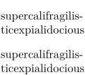

Syntax (autogenerated)
Syntax
| \- |
Description
Indicate an optional hyphenation point in a word.
Example
-
\setuppapersize[A10] \setupwhitespace[big] supercalifragilisticexpialidocious super\-cali\-fragi\-lis\-tic\-ex\-piali\-do\-cious
- 
See also
- Hyphenation
- \hyphenation to define the hyphenation of a specific word
- \startexceptions to define language-specific hyphenations
- \- to define an ad-hoc breakpoint
- \unhyphenated to prevent hyphenation
- \doublehyphendemerits to penalize hyphenation on consecutive lines
- \setupalign justification parameters to tweak the auto-hyphenation algorithm
- \definebreakpoints to initialize a breakpoint set
- \definebreakpoint to add to a breakpoint set
- \setbreakpoints to activate a breakpoint set
- \language to activate a language's settings, including hyphenation
- Wrapping
Help from ConTeXt-Mailinglist/Forum
All issues with: